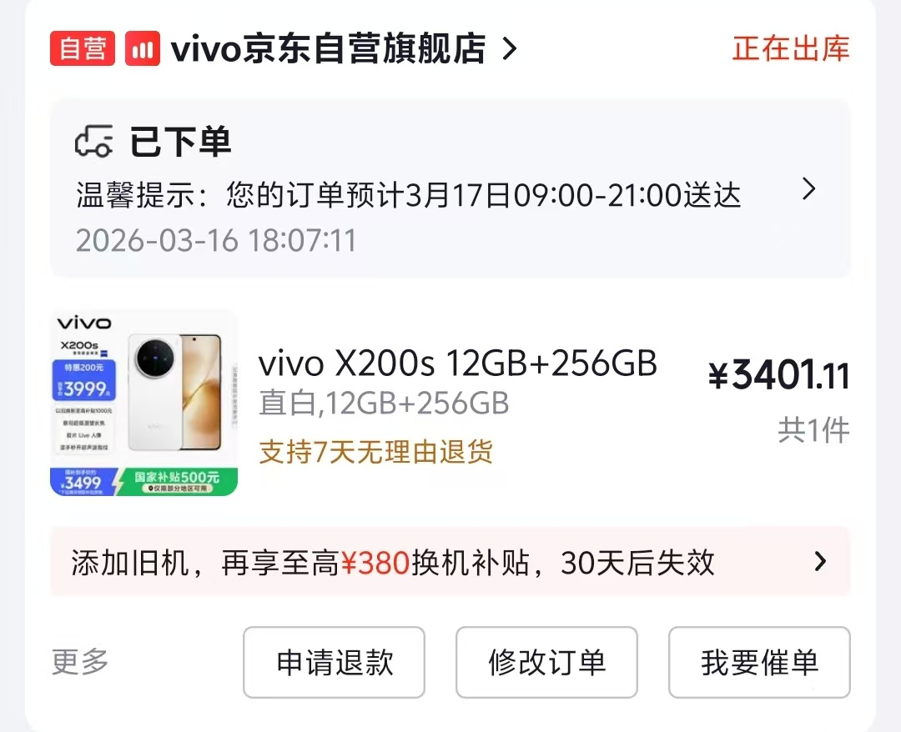

Mikasa
@bcfqdtfqz
讲个故事，
因为不可抗力因素，回家以后我说想要换部手机，最好三星和苹果，然后我妈到了华为店门口一直在那试还想劝说我换华为，还说不买特斯拉想要买个华为问界还是尊界给我气的火冒三丈
于是为了让我妈能够摆脱某菊花品牌的变态狂热我就往她私信里疯狂发华为黑料和逆天华为粉的各种事迹

大石
@nn142857
在20岁全款给妈妈买手机 不是最贵的但是我能力范围好的 https://t.co/iTZaLGD22w